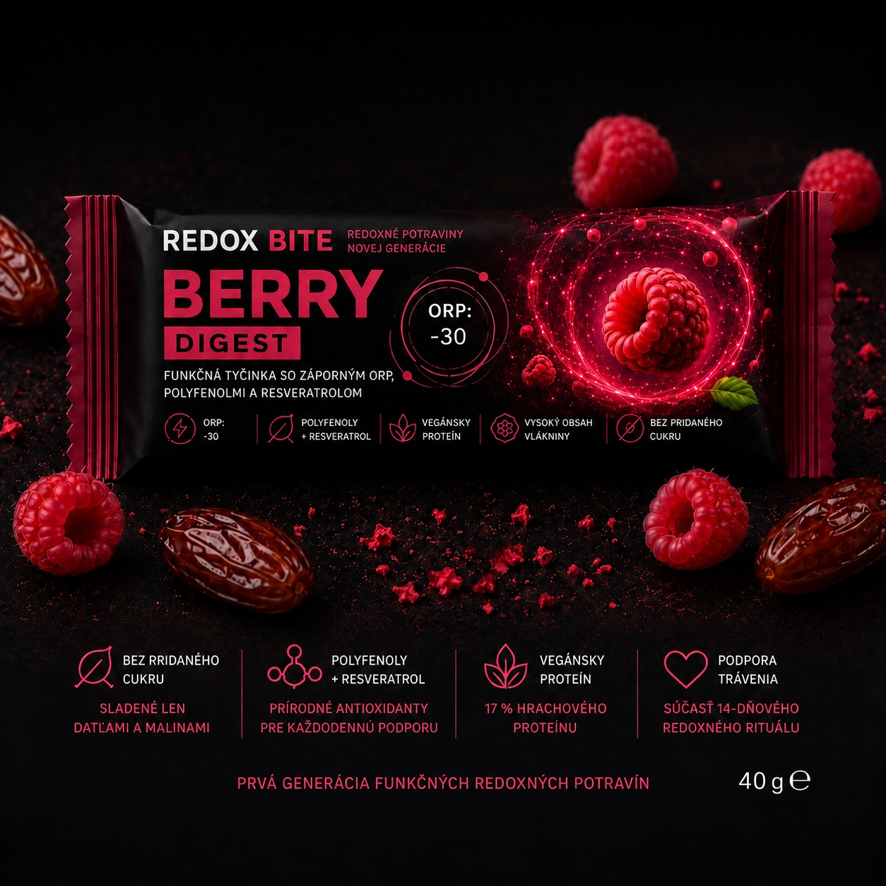
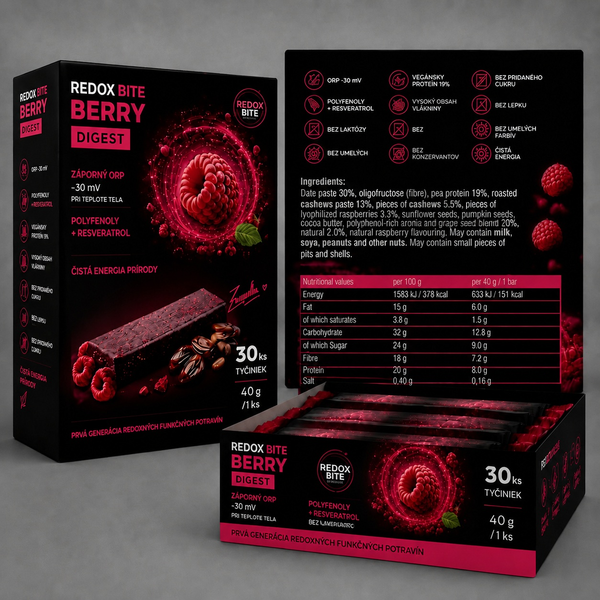

REDOX BITE Berry Digest
Funkčná redoxná tyčinka — 1 × 40 g. Podporuje bunkovú energiu a rovnováhu trávenia vďaka zápornému ORP –30 mV.
4,90 €
Kúpiť na ZEOZOEby ZEOZOE
Úplne nový prístup k funkčným potravinám. Vďaka merateľnému zápornému oxidačno-redukčnému potenciálu [ORP -30mV] podporuje prirodzenú energiu buniek a efektívne trávenie na hĺbkovej úrovni.


O produkte
REDOX BITE Berry Digest predstavuje úplne novú generáciu funkčných potravín. Spája záporný oxidačno-redukčný potenciál (–30 mV), silu polyfenolov a resveratrolu s múdrosťou Tradičnej čínskej medicíny (TČM) — a vytvára tak revolučný produkt.
Nie je to len tyčinka. Je to kombinácia západnej biochémie a tisícročnej filozofie TČM, ktorá vníma trávenie ako stred tela a zdroj životnej energie Qi.
Tento unikátny produkt spája silu polyfenolov, resveratrolu, prebiotickej vlákniny a kvalitného hrachového proteínu s múdrosťou TČM, čím pomáha vytvárať ideálne podmienky pre zdravšie, ľahšie a vitálnejšie trávenie.
ORP (oxidačno-redukčný potenciál) vyjadruje schopnosť látky odovzdávať elektróny — teda energiu. Čím je hodnota nižšia (záporná), tým viac energie môže látka odovzdať.
Vďaka špeciálnej fotónovej a frekvenčnej úprave majú zložky upravenú štruktúru, ktorú telo dokáže okamžite absorbovať a premeniť na čistú vitalitu a energiu.
Registrovaná značka ZEOZOE® · Vyrobené na Slovensku
Produkty
Berry Digest — funkčná tyčinka pre energiu a trávenie. Dostupné opäť od 14. 7.
Funkčná redoxná tyčinka — 1 × 40 g. Podporuje bunkovú energiu a rovnováhu trávenia vďaka zápornému ORP –30 mV.
4,90 €
Kúpiť na ZEOZOE30 funkčných tyčiniek (30 × 40 g) so záporným ORP –30 mV. Ideálne na kompletnú 14-dňovú kúru reštartu trávenia.
117,00 €
Kúpiť na ZEOZOEBenefity
–30 mV pôsobí ako aktívny bunkový dobíjač a znižuje oxidačný stres v tráviacom trakte.
Chránia mikroflóru a podporujú zdravie črevnej sliznice.
Oligofruktóza a prírodná vláknina vyživujú priaznivé črevné baktérie.
Kvalitné rastlinné stavebné kamene bez zaťaženia žalúdka.
Prirodzenú sladkosť tvorí datľová pasta a lyofilizované maliny. Bez umelých farbív a syntetických aróm.
Vhodné pre rastlinný životný štýl. Vyrobené na Slovensku s inovatívnou redox technológiou.
Zloženie a použitie
Datľová pasta 30 %, oligofruktóza (vláknina), hrachový proteín 17 %, pražená kešu pasta 13 %, kúsky kešu 5,5 %, polyfenolový extrakt, resveratrol, kúsky lyofilizovaných malín 3,3 %, slnečnicové semienka, tekvicové semienka, kakaové maslo, prírodná malinová aróma, antioxidant: extrakt bohatý na tokoferoly.
Alergény: Môže obsahovať mlieko, sóju, arašidy a iné orechy. Môže obsahovať malé kúsky kôstok a škrupín.
Doplnok stravy nie je náhradou vyváženej a pestrej stravy ani zdravého životného štýlu. Neprekračujte odporúčanú dennú dávku. Uchovávajte mimo dosahu detí. Ak užívate lieky alebo trpíte zdravotnými ťažkosťami, pred použitím sa poraďte s lekárom. Informácie vychádzajú z tradičného používania prírodných zložiek a zásad TČM — nejde o lekárske tvrdenia.
Odovzdávanie elektrónov. Prirodzená vitalita.
ZEOZOE
Objednajte si REDOX BITE Berry Digest výhradne v oficiálnom obchode ZEOZOE.
Nakupovať Redox BiteKontakt